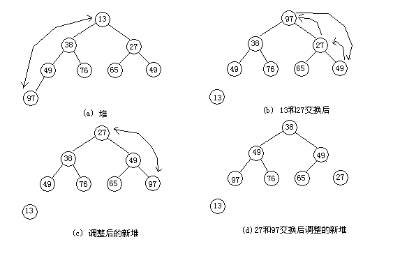
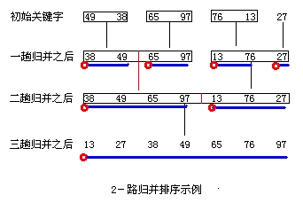

第三十六课
本课主题： 选择排序，归并排序
教学目的： 掌握选择排序，归并排序算法
教学重点： 选择排序之堆排序，归并排序算法
教学难点： 堆排序算法
授课内容：
一、选择排序
每一趟在n-i+1(i=1,2,...n-1)个记录中选取关键字最小的记录作为有序序列中第i个记录。
二、简单选择排序
算法：
Smp_Selecpass(ListType &r,int i)
{
k=i;
for(j=i+1;j<n;i++)
if (r[j].key<r[k].key)
k=j;
if (k!=i)
{ t=r[i];r[i]=r[k];r[k]=t;}
}
Smp_Sort(ListType &r)
{
for(i=1;i<n-1;i++)
Smp_Selecpass(r,i);
}
三、树形选择排序
又称锦标赛排序，首先对n个记录的关键字进行两两比较，然后在其中一半较小者之间再进行两两比较，如此重复，直到选出最小关键字的记录为止。
四、堆排序
只需要一个记录大小的辅助空间，每个待排序的记录仅占有一个存储空间。
什么是堆？n个元素的序列{k1,k2,...,kn}当且仅当满足下列关系时，称之为堆。关系一：ki<=k2i 关系二：ki<=k2i+1（i=1,2,...,n/2)
堆排序要解决两个问题：1、如何由一个无序序列建成一个堆？2、如何在输出堆顶元素之后，调整剩余元素成为一个新的堆？
问题2的解决方法：

sift(ListType &r,int k,int m){
i=k;j=2*i;x=r[k].key;finished=FALSE;
t=r[k];
while((j<=m)&&(!finished))
{
if ((j<m)&&(r[j].key>r[j+1].key)) j++;
if (x<=r[j].key)
finished:=TRUE;
else {r[i]=r[j];i=j;j=2*i;}
}
r[i]=t;
}
HeapSort(ListType &r)
{
for(i=n/2;i>0;i--) sift(r,i,n);
for(i=n;i>1;i--){
r[1]<->r[i];
sift(r,i,i-1)
}
}
五、归并排序
将两个或两个以上的有序表组合成一个新的有序表的方法叫归并。
假设初始序列含有n个记录，则可看成是n个有序的子序列，每个子序列的长度为1，然后两两归并，得到n/2个长度为2或1的有序子序列；再两两归并，如此重复。

merge(ListType r,int l,int m,int n,ListType &r2)
{
i=l;j=m+1;k=l-1;
while(i<=m) and(j<n) do
{
k=k+1;
if (r[i].key<=r[j].key) {r2[k]=r[i];i++;}
else {r2[i]=r[j];j++}
}
if (i<=m) r2[k+1..n]=r[i..m];
if (j<=n) r2[k+1..n]=r[j..n];
}
mergesort(ListType &r,ListType &r1,int s,int t)
{
if (s==t)
r1[s]=r[s];
else
{
mergesort(r,r2,s,s+t/2);
mergesort(r,r2,s+t/2+1,t);
merge(r2,s,s+t/2,t,r1);
}
]
六、总结